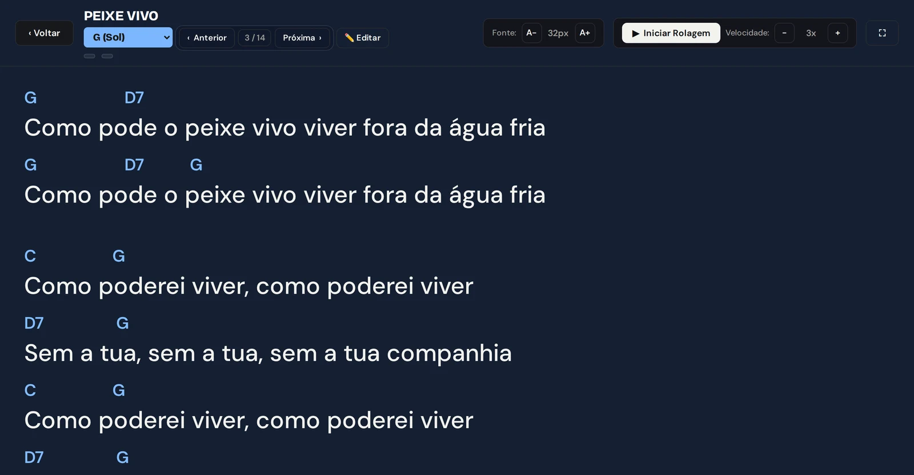
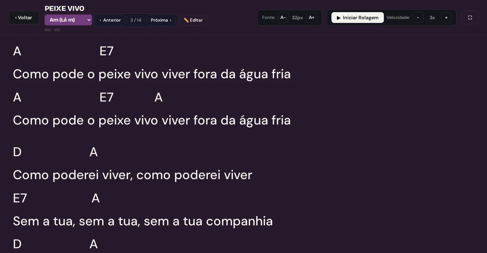
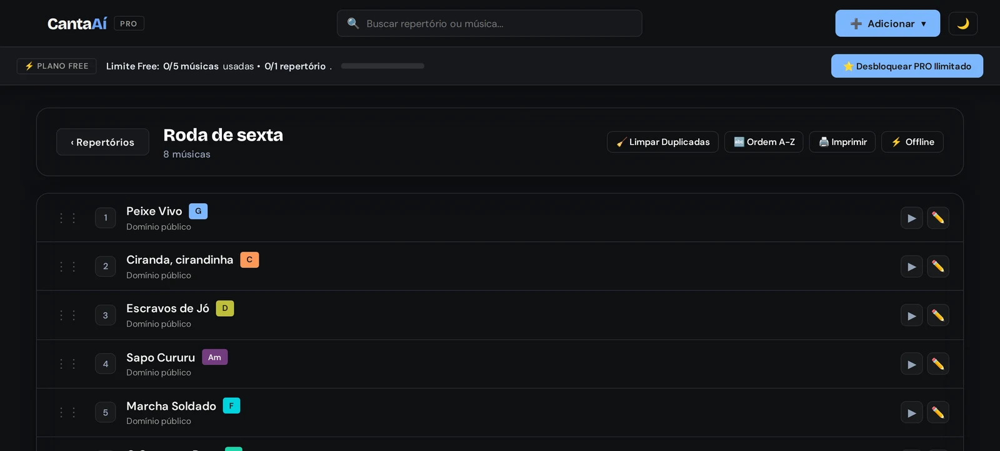
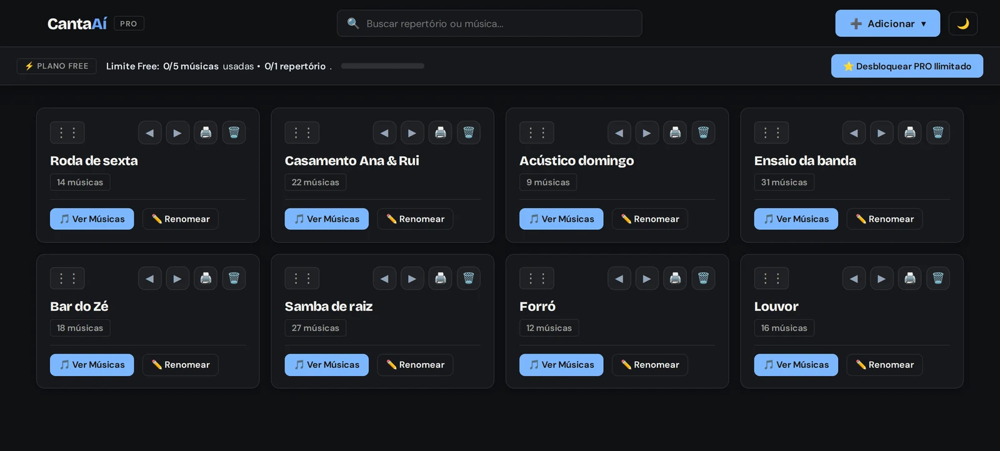
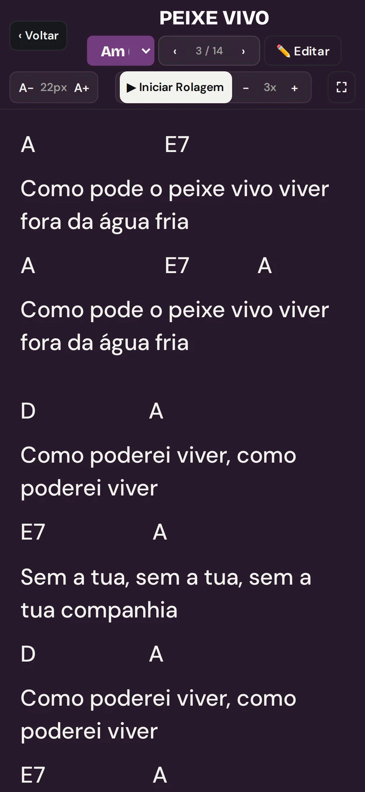

Seu repertório, no tom certo.
Letras e cifras organizadas por show. Mude o tom com um toque, leia no escuro e nunca mais chegue no palco com papel amassado.
Sem cartão. 7 dias de PRO completo. Celular, tablet e computador.
Cada tom tem uma cor. Toque numa nota: você está em G e a página inteira responde. No app, é o tom da música que você abriu.
Troque o tom. As cifras acompanham. A tela muda de cor.
É o mesmo motor de transposição do app, com a mesma lógica: escolha o tom de cantar e a música inteira é transposta a partir do tom original.
Prints reais da interface
Letra grande, rolagem automática, fonte ajustável, modo palco e o tom de cada música à vista.





A marca não tem uma cor. Tem doze.
Dó é laranja. Cada meio-tom gira 30° na roda de cores até voltar. A cor deixa de ser enfeite e vira informação: dois músicos no mesmo palco veem a mesma cor para o mesmo tom.
Logotipo. O logotipo é sempre o mesmo: “Canta” na cor do texto e “Aí” no azul da marca. Quem muda de cor é a interface — cifras, seletor de tom e selos. O acento agudo é o gesto da marca: sozinho, vira o símbolo afinador (as 12 marcas são os 12 tons).
Tom de cada música, de cada cantor
Sobe ou desce e as cifras acompanham, com precisão harmônica (incluindo baixo invertido). O tom fica salvo na música: a mesma canção em G para você, em E para quem divide o vocal.
Repertório por show, não por pasta
Monte a ordem da noite, arraste para reordenar, passe de música em música com um toque ou pedal. Imprima o setlist em fonte grande.
Modo palco
Letra grande, fundo escuro, tela que não apaga, rolagem automática com velocidade ajustável. Feito para ler a dois metros, com a mão ocupada.
Importa o que você já tem
Pastas inteiras do Google Drive, Word, PDF ou texto. As cifras são reconhecidas e formatadas automaticamente; duplicadas são detectadas.
Áudio guia do lado da letra
Dock do YouTube ou áudio próprio dentro do prompter, com detecção do tom e ajuste de semitons sem mudar a velocidade.
Funciona sem internet
Marque um repertório como offline e ele fica no aparelho. Caiu o sinal no meio do show, a letra continua lá.
Comece grátis. Assine quando o palco pedir.
Sem cartão para começar. Os 7 primeiros dias são PRO completo.
Gratuito
- 7 dias de PRO completo
- 1 repertório ativo
- Até 5 músicas com cifras
- Transposição de tom em tempo real
- Rolagem automática
CantaAí PRO
- Repertórios e músicas ilimitados
- Transposição instantânea e rolagem fluida
- YouTube dock e áudios guia
- Importação em lote via Google Drive
- Setlist em PDF e modo offline
- Backup seguro na nuvem
Perguntas que todo músico faz antes
Como funciona a degustação de 7 dias?
Ao criar a conta você recebe acesso total ao PRO por 7 dias, sem cadastrar cartão. Se não assinar, a conta continua ativa no plano gratuito.
O teleprompter funciona se a internet cair no meio do show?
Sim. As músicas e repertórios ficam em cache seguro no navegador. Uma vez carregadas, letras e cifras continuam funcionando sem internet.
Funciona em tablet ou celular antigo?
Roda no navegador, sem instalar nada: Android, iPhone, iPad e computador. Pode ser adicionado à tela inicial como aplicativo.
Posso importar minhas cifras do Google Drive?
Sim. Conecte o Drive e importe pastas inteiras (Word, PDF, texto). O CantaAí reconhece as cifras e o tom de cada música automaticamente.
Chegou, abriu, cantou.
Sem procurar tom. Sem papel amassado. Seu repertório inteiro no bolso, na cor do tom.